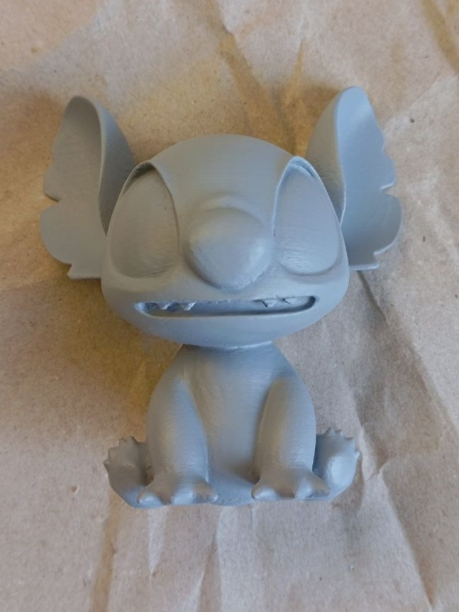
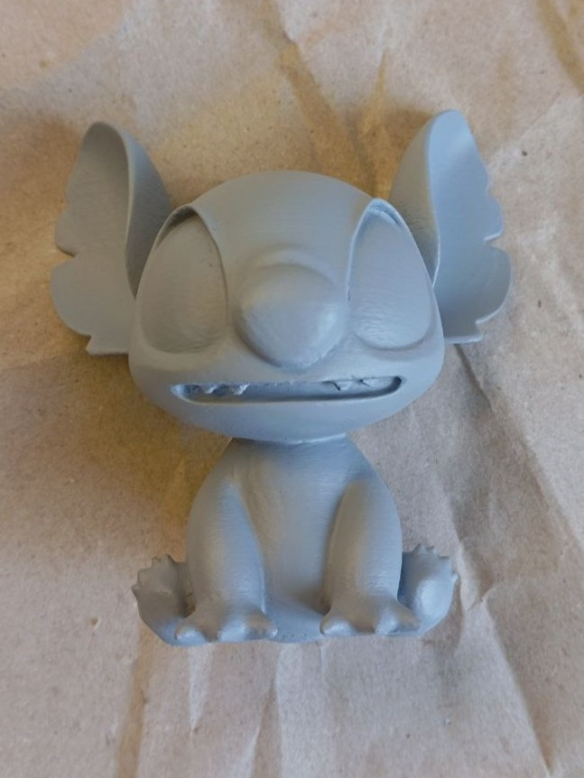

Stitch figurine

 



Project description
While working on the Mita figurine, I wanted to practice painting, as the last time I held brushes was back in school during art classes. Also, it was recently my cousin's birthday, so I combined these two things. Thus, this Stitch figurine appeared, which I gave to my cousin, while also gaining my first experience in painting such models before moving on to a more substantial miniature.
Among other things, this allowed me to refine the entire technology. I'd even confidently say that after this work, I can make a full-fledged guide on creating such miniatures with a 3D printer. Technically, that's exactly what I did. I only managed to make a short, edited hastily.
Implementation
Naturally, I started by searching for a model. Many didn't appeal to me, but I found this model that looked not too complex, plus it had a multicolored render which made painting much easier.
It printed very well too, although areas above supports required additional processing. Printed with blue PETG filament on a Prusa mk3s printer, which I got from a client for improvements. More details can be found in another project.
Next came the tedious and lengthy work with putty and sandpaper. This takes the most time. I used some wood putty. It dries very quickly, is inexpensive, can be diluted with plain water to the desired consistency, and is easy to work with. Probably the best purchase. In general, I applied 2 layers: the first quite thick to quickly fill all depressions and layer lines from 3D printing, and then a thinner layer of more liquid putty to cover scratches and other imperfections. Used sandpaper grit from 120 to 240, resulting in a fairly smooth surface. However, I later regretted rushing and not perfecting the surface.

After this comes priming. I used gray aerosol primer. It was also cheap and worked more than well. Didn't bother with multiple coats, just applied one main layer and then touched up where needed. Primer reveals all unevenness and scratches on a monotone color. This is where I saw there were still many areas needing work, but I decided not to spend more time on it.


The most interesting stage: painting. As I mentioned, the last time I held brushes was in school, but it turned out very well. But let's go in order. First I bought a set of cheap paints and couldn't understand why everything was so bad - the colors literally wouldn't adhere, and the second coat would dissolve and erase the first. After that, I got more expensive paints in small tubes and finally managed to paint properly. The white color was especially different - in the cheap paint it was practically invisible.


Now the actual model painting: everything went smoothly. I did this during streams and left the recordings on my channel. First applied the base colors: blue for the body and pink for the ears. The ears, by the way, I painted freehand without using stencils or anything similar, so the border isn't perfect, but I tried to make it as good as possible.

Then started adding small details like the blue belly, eyes, etc. There was one nuance: in some places the paint would bead up as if it didn't want to wet the surface. But this was probably because the primer didn't adhere evenly everywhere or due to the surface itself. In any case, when the paint dried slightly it adhered normally. I diluted it to a milk-like consistency, it has good coverage so that was enough. However, I noticed the black paint had slightly worse coverage than other colors. Not sure why, but I applied more coats to the eyes than other parts.
I also considered using special painting techniques to add volume, highlights and shadows, but as I got closer to the final result, I became less willing to ruin it with an awkward movement. So the painting turned out fairly simple.

Now the pattern on the back. It wasn't on the reference, so I had to find other pictures from different angles. Sketched a pattern on paper and tried to replicate it on the figurine. Turned out great, and the color was well matched.
You can notice some scuffs and paint chips on the tail and hairs. This probably happened from the figurine rubbing against the paper I used as a mat. Need to watch out for that.

And here's the final result. Before and after varnish. Nothing special to say about the varnish - from the same brand as the primer, everything worked fine.
In total, this figurine took just over two weeks of leisurely work, sometimes at night, sometimes during free time during the day. The painting alone took 9 hours total. Not bad for a first attempt, I think.
I consider this an extremely valuable experience, at least for consolidating all skills from putty work to painting. Although, looking ahead, my putty skills improved even more with the Mita figurine, but more on that next time. The figurine was successfully gifted, though the surprise was spoiled when my brother joined the final painting stream and saw everything ahead of time.